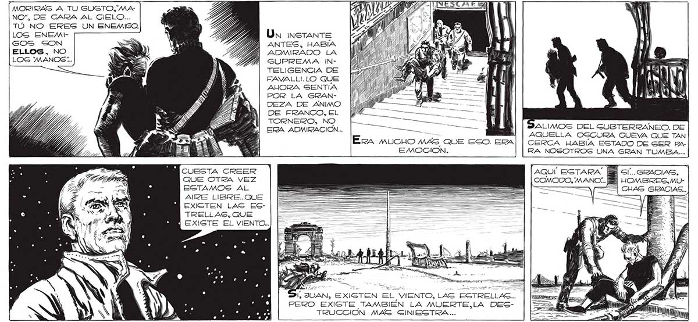
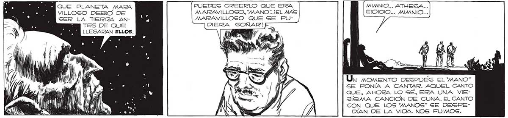

244 MORIRAS A TU GUSTO, MANO. DE GARA AL CIELO... TÚ NO ERES UN ENEMIGO. LOGS ENEMIGOS SON ELLOS, NO LOGS 'MANOS:.. € QUE PLANETA MARA VILLOGO DEBIO DE GER LA “TIERRA ANTES DES ua LLEGARAN ELLOS.. A, ¡as Di! ' o sad á ] ¡NN A ent | y 5 h 3 A ) ds CUESTA CREER QUE OTRA VEZ EGTAMOS AL AIRE LIBRE..QUE EXIGTEN LAS ESTRELLAS, QUE Un instante ANTES, HABÍA ADMIRADO LA GUPREMA INTELIGENCIA DE FAVALLI.LO QUE AHORA SENTÍA POR LA GRANDEZA DE ANIMO DE FRANCO, EL TORNERO, NO ERA ADMIRACIÓN... UN A | ¡ALIMOS DEL SUBTERRANEO. DE — (| AQUELLA OSCURA CUEVA QUE TAN Era MUCHO MÁS QUE ESO. ERA| | CERCA HABÍA ESTADO DE SER ha. RA NOSOTROS UNA GRAN TUMBA... EMOCION. Í SÍ.. GRACIAS, Í HOMBRES, MUCHAS GRACIAS... é ¡do 3.5 JIVAN, EXISTEN EL VIENTO, LAS ESTR S : 3 3 ÍS A yl Y i A A e , A UR IATA ELLAS... | PERO EXISTE TAMBIÉN LA MUERTE,LA DESTRUCCIÓN MAGS GINIESTRA... PUEDEG CREERLO QUE ERA MIMNIO... ATUESA... MARAVILLOSO, "MANO“..¡EL MAS ElODIOIO... MIMNIO... MARAVILLOSO QUE SE PUDIERA SONAR! Un momento DESPUES El MANO” GE PONÍA A CANTAR. AQUEL CANTO QUE, AHORA LO SÉ, ERA UNA VIEJIGIMA CANCION DE CUNA. EL CANTO CON QUE LOS 'MANOS” GE DESPEDÍAN DE LA VIDA. NOS FUIMOS.

